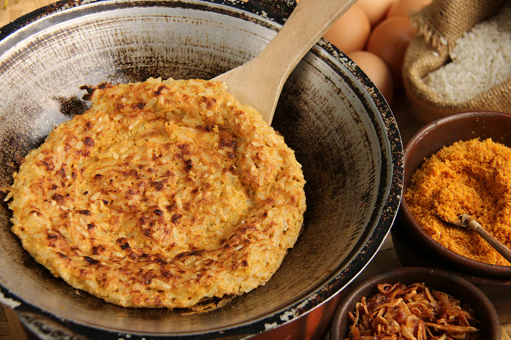
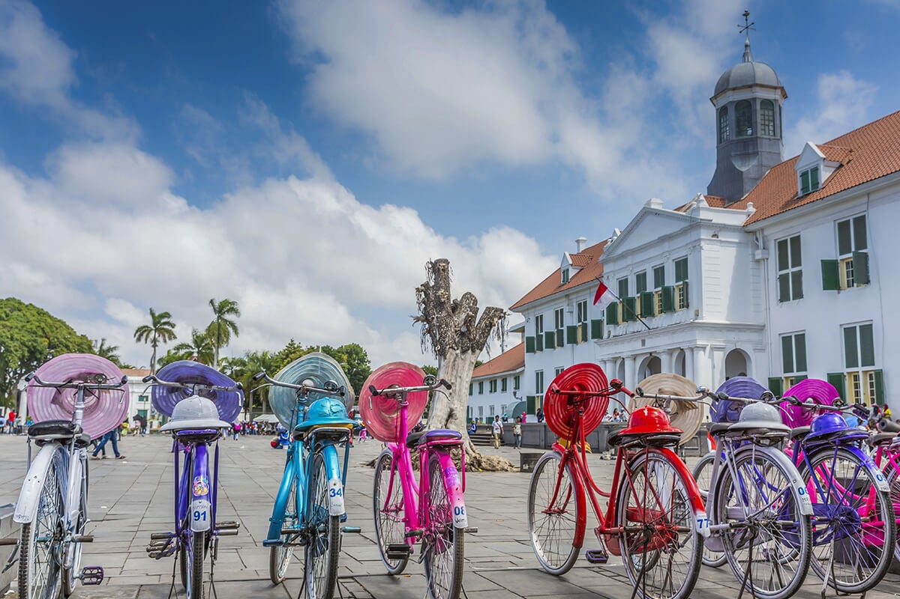

Jakarta, Ibu Kota Indonesia
Sebagai ibu kota negara Republik Indonesia, Jakarta adalah kota metropolitan luas yang terdiri dari sekitar 10 juta penduduk yang memiliki beragam latar belakang suku bangsa dari seluruh penjuru Indonesia. Pada siang hari, keramaian akan bertambah seiring dengan mobilitas penduduk yang beraktifitas di ibu kota dan akan kembali pulang ke rumah menjelang senja hari.
Terletak di barat laut Pulau Jawa, Jakarta banyak berkembang pesat hingga melibatkan banyak desa yang disulap menjadi bagian dari kota Jakarta. Bahkan Jakarta sekarang terkenal dengan konglomerasi desa, dimana jalan kampung tak lagi setapak namun berubah menjadi jalan utama dan jalan raya yang besar.

Pesona Kota Metropolitan
Saat Sobat Pesona berkendara di jalanan Jakarta, jangan terkejut bila tiba-tiba terjebak diantara kerumunan motor dan mobil yang merajai jalanan di Jakarta. Kota megapolitan ini akan membuat Sobat Pesona sering menggunakan bantuan GPS sebagai navigasi saat berkendara di jalanan Jakarta yang ramai.
Tak hanya menjadi pusat pemerintahan nasional dan pemerintahan provinsi, Jakarta juga menjadi pusat politik Indonesia serta pusat keuangan dan perdagangan nasional. Itu yang membuat Jakarta menjadi kota yang dinamis dan membuat hampir semua aktivitas penduduk Jakarta berlangsung sepanjang waktu.
Dibagi menjadi 5 kabupaten, Jakarta Pusat, Jakarta Utara, Jakarta Barat, Jakarta Timur dan Jakarta Selatan, Jakarta juga punya 5 kota-kota besar yang ada sekitar wilayah ibu kota dengan istilah Jabodetabek atau Jakarta, Bogor, Depok, Tangerang dan Bekasi.

Saat berada di Jakarta Pusat, Sobat Pesona dapat menemukan bangunan ikon-ikon jakarta yang sangat artistik, seperti Monas, Istana Merdeka, Museum Nasional, Masjid istiqlal, Katedral Jakarta dan Monumen Selamat datang yang lebih dikenal sebagai Bundaran HI. Tak hanya bangunan ikon Jakarta, pusat perbelanjaan dan hotel-hotel bergengsi juga terletak di jantung kota Jakarta ini. Sobat Pesona bisa menemukan hiburan yang menyenangkan di sini selama 24 jam penuh!
Jika Sobat Pesona menginginkan tempat hiburan lengkap untuk keluarga, wilayah Jakarta Utara bisa menjadi tujuan pada akhir pekan depan. Taman Impian Jaya Ancol, menawarkan berbagai hiburan seperti Dufan, Seaworld, Taman Petualangan Air Atlantis, Ecopark, Pasar Seni dan berbagai pilihan untuk wisata kuliner.
Apabila Sobat Pesona ingin berlibur ke laut dan pantai yang menenangkan, kamu bisa menyeberang dengan kapal dari teluk Ancol menuju Kepulauan Seribu. Lebih dari 10 pulau di sini dapat Sobat Pesona kunjungi, namun pulau yang terkenal adalah Pulau Bidadari, Pulau Tidung, Pulau Pari dan Pulau Macan yang memiliki pondok penginapan pribadi yang bisa membuat Sobat Pesona berenang di laut lepas sesaat setelah bangun dari tidur di pagi hari. Sangat menyenangkan!
Jakarta Barat, Jakarta Timur dan juga Jakarta Selatan merupakan kawasan perkantoran yang letaknya bersebelahan dengan kawasan pemukiman, fasilitas umum dan pusat perbelanjaan yang banyak tersebar. Di kawasan Jakarta Barat, Sobat Pesona bisa juga menemukan tempat warisan bersejarah, tepatnya di Museum Fatahillah. Kawasan Museum ini lebih dikenal dengan nama Kota Tua, dimana Sobat Pesona dapat menikmati bangunan peninggalan kolonial dan berkeliling dengan sepeda. Tak hanya itu, Jakarta Barat juga punya tujuan ikonik yang diberi nama Museum Macan. Di dalam museum ini banyak disajikan hasil karya seni kontemporer termasuk hasil karya seni Yayoi Kusama.
Saat berada di Jakarta Timur, Sobat Pesona dapat mengunjungi Taman Mini Indonesia Indah untuk melihat-lihat miniatur pulau-pulau di Indonesia beserta rumah adat tradisional dan melihat berbagai ragam budaya di seluruh Indonesia.
Jika ingin mengenal lebih dekat budaya Betawi, Sobat Pesona bisa kunjungi kawasan Budaya Setu Babakan di Jakarta Selatan. Rumah adat tradisional Betawi, museum dan kegiatan-kegiatan seni budaya seperti tarian tradisional dan juga musik tradisional sering digelar di kampung budaya ini. Bahkan wisata kuliner khas Betawi, seperti Kerak Telor dan Soto Betawi juga dapat Sobat Pesona jumpai di sini. Sebelum pulang, jangan lupa untuk membuat miniatur ondel-ondel yang menjadi salah satu ikon kota Jakarta.
Bagi Sobat Pesona pecinta kuliner, tidak sulit untuk menemukan tempat wisata kuliner yang banyak tersebar di kota Jakarta. Begitu juga dengan kedai-kedai kopi yang menjamur dan bisa Sobat Pesona nikmati untuk menghabiskan waktu akhir pekan. Apalagi kalau Sobat Pesona ingin makan gado-gado, nasi goreng, soto bahkan rendang, semuanya tersedia di Jakarta!
Cara menuju kesana
Ada dua bandara yang ada di Jakarta. Bandara internasional Soekarno-Hatta menjadi bandara terbesar di Indonesia. Sedangkan Bandara Halim Perdana Kusuma melayani beberapa penerbangan domestik:
- Jalur Darat :
- Jalur laut :
- Jalur Udara :
Jakarta terhubung langsung dengan jalur darat ke beberapa kota besar di Jawa. Bus dan kereta api merupakan transportasi darat yang dapat dipilih untuk menuju Jakarta. Saat berkunjung ke Jakarta, Sobat Pesona bisa menyempatkan diri berkunjung ke Bogor untuk menikmati Kebun Raya atau berwisata ke Puncak. Jika senang bermain di Pantai, kunjungi Pantai Anyer Carita di Banten untuk menghabiskan waktu liburan.
Pelabuhan tersibuk di Jakarta adalah Pelabuhan Tanjung Priok yang ada di Jakarta Utara. Genting Dream Cruises, kapal pesiar dari Singapura sudah berencana membuka jalur menuju ke Jakarta. Untuk Sobat Pesona yang ingin berlibur mewah, ini bisa menjadi pilihan yang tepat!
Sobat bisa ke Jakarta melalui dua bandar udara, yaitu Bandar Udara Internasional Soekarno-Hatta di Cengkareng, Kota Tangerang, serta Bandar Udara Halim Perdanakusuma di Jakarta Timur untuk sobat yang berada di luar pulau
Picts Of Jakarta